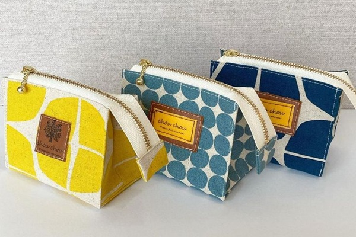
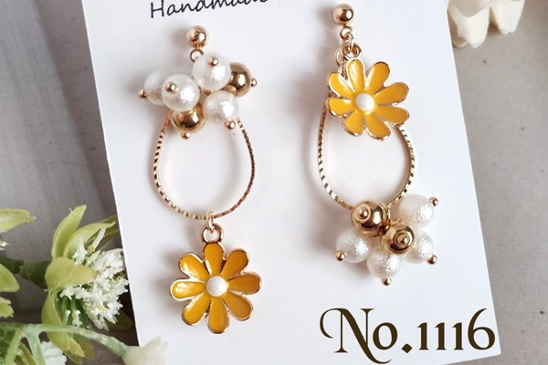
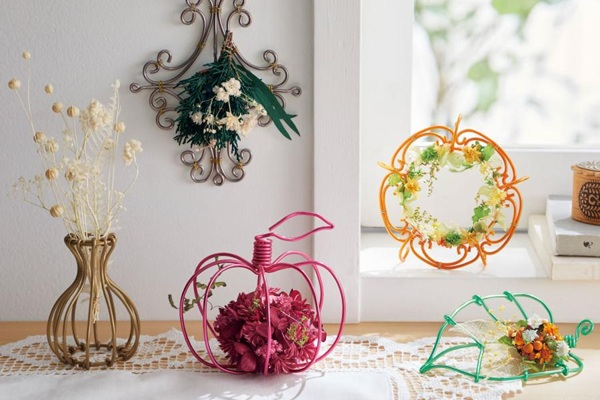
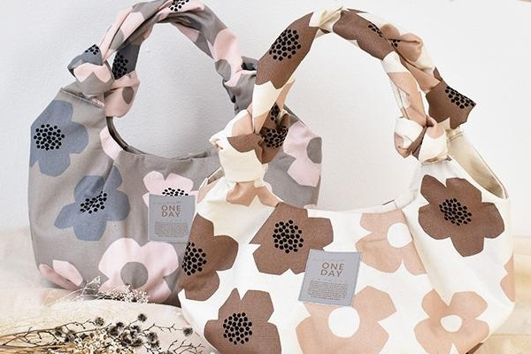
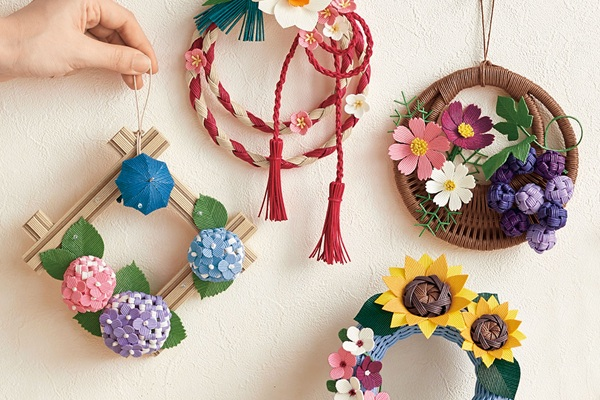

- トップ >
- 作品紹介
作品紹介
たんぽぽ工房の手作り雑貨をご紹介します。ひとつひとつ心を込めて制作しています。
布小物

やさしい色合いの布小物を中心に制作しています。ポーチ、巾着、コースターなど、日常にそっと寄り添うアイテムを揃えています。
アクセサリー

天然素材や淡い色味を使ったアクセサリーを制作しています。普段使いしやすく、贈り物にも人気です。
インテリア雑貨

お部屋をやさしく彩るインテリア雑貨を制作しています。リース、布小物、木製アイテムなど、季節に合わせて新作を追加しています。
バッグ

たんぽぽ工房では、布の風合いを大切にしたハンドメイドバッグを制作しています。 トートバッグ、ショルダーバッグ、ミニバッグなど、普段使いしやすいデザインを中心に揃えています。 ひとつひとつ丁寧に縫い上げているため、長く愛用していただけるアイテムです。
季節のアイテム

季節に合わせた限定アイテムを制作しています。 春は花モチーフの雑貨、夏は涼しげな素材を使った小物、秋は落ち着いた色合いの布小物、 冬はあたたかみのある編み物やフェルト雑貨など、季節ごとに新作を追加しています。 贈り物にも人気のシリーズです。